Make MCSSP's story public
Who We Are, What We Do, and Get Involved show the MCSSP's story, work, and ways to help, all in one place online for the first time.
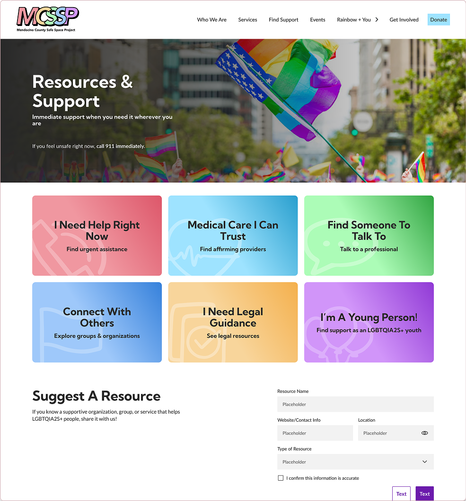
Redesigning MCSSP's website so an isolated rural queer community finally has somewhere to turn
Mendocino County Safe Space Project(MCSSP) is an LGBTQIA2S+ safe space connecting people to resources and training organizations in Cultural Humility and queer-supportive practices.
When we were introduced to MCSSP, we were excited by the potential for their website to become a true digital safe space.
What we didn't anticipate was how hard it would be to make a site that would impact many queer lives.
Jump to final design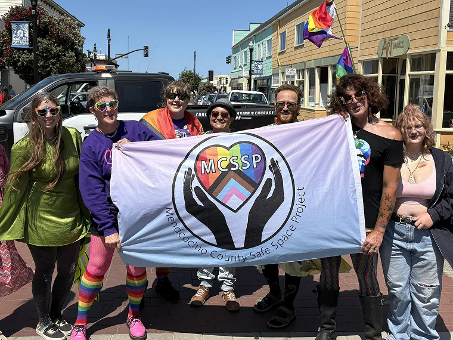
MCSSP marching at their first-ever Pride Parade.
I began mapping where MCSSP's content actually lived and found their website, Facebook, Instagram, workshop pages, scholarship listings, donation portals.
Together, we audited this digital footprint, and the picture was fragmented:
For people trying to find support in a moment of need, such a scattered footprint becomes a serious barrier.
The gaps pointed to a bigger question:
If this was all we could find online, was this really everything MCSSP was doing for the community?
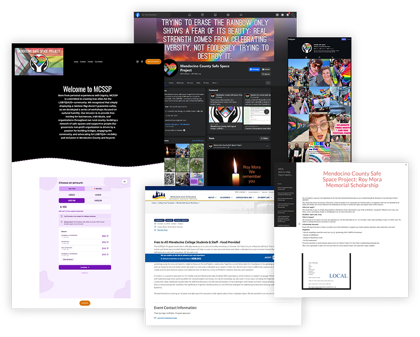
Screenshots of MCSSP's website, Facebook, Instagram, and scholarship page.
We met with Cynthia, co-founder of MCSSP, to understand what wasn't being represented online. They shared grants, workshop outlines, board narratives, and we uncovered proof of a program far bigger than what was said online:
MCSSP online and MCSSP in real life were two different organizations. One had almost no content. The other was mentoring students, educating the county, and marching in its first Pride parade.
MCSSP's work needed to be seen. Now we needed to find out how to close this gap.
"Outreach is important... online resources are sometimes the only resources people have. Rural people, people who might not be able to come around, or who aren't out yet, this might be all they get."
- Cynthia (Co-Founder, MCSSP)
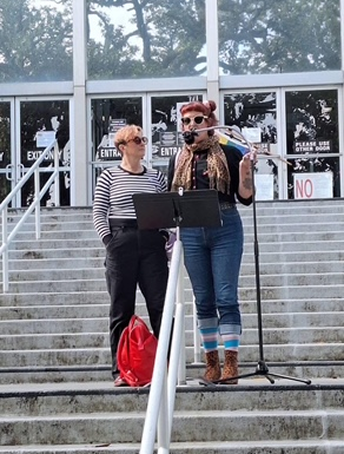
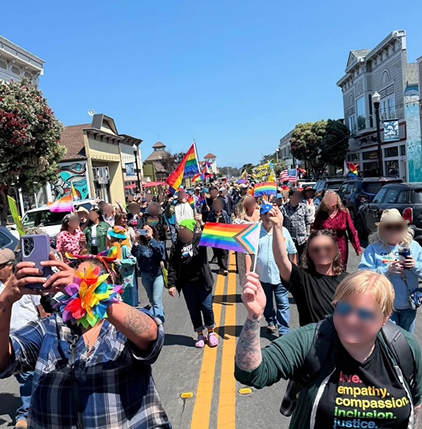
Pictures of Reyna speaking at a community event, with Cynthia by her side, and MCSSP marching at their first-ever Pride Parade.
To start our research we looked at national and local resource hubs and mainly found critical resources, support groups and representative queer media.
Going in, we wanted to make the cutest, gayest site possible. Researching competitors also helped us see how to balance the fun with this serious information.
What we were missing now was to understand the resource hub Mendocino needed. That's when we turned to Cynthia to connect us with real community members:
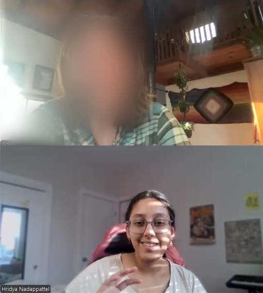
“A vast majority of people want to be nice to people. They want someone who is warmly open to giving them resources and is approachable.”
An excerpt from one of my interviews with a community member.
We finally had so many insights to empower Mendocino. Every one felt too important to omit. And the weight of it hit us:
The impact this platform could have scared us. We NEEDED to get it right.
Seeing to what other communities had, what MCSSP was actually doing, and what Mendocino's queer community wanted, the gaps were obvious. We just didn't know what to do with it, and the growing weight of responsibility only made it harder to move.
We decided to do something and started jotting down everything we'd uncovered and everything we still needed to know, just so we could move ahead.
Somewhere between all the scribbling, we slowly connected what needed to be done:
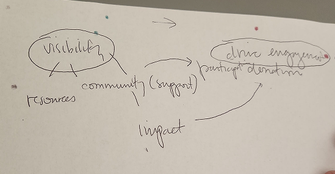
Trying to put together our strategic direction by pulling all the words that surfaced in our research
Design a website that
makes MCSSP's impact visible to
drive engagement, participation, and donation.
MCSSP needed to be more than a website. It had to meet people where they already were.
In a rural community, phones are far more universal than laptops, especially for queer teens who might need to browse privately, and many were already finding MCSSP through Facebook's mobile app.
It also had to be fast. Much of what MCSSP would be offering only helps if it's reachable in seconds.
Mobile-first wasn't a design preference. It was how we'd make the resource hub actually accessible.
But accessible only matters if people can find what they came for.
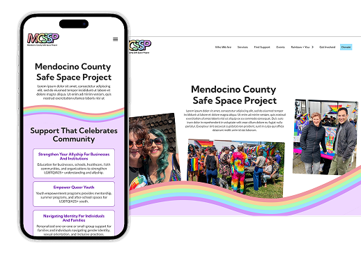
MCSSP's site designed mobile-first, since most visitors would be reaching it from a phone.
With the flood of content that we had, we needed to make it findable. It was clear that we would need some major organization here, so that people could actually find information they needed on this site.
We went back to our interviews and competitor research, one pattern kept showing up: everything fell into one of two needs: people wanting to understand MCSSP, and people needing help right now.
So the site had to do two things:
Who We Are, What We Do, and Get Involved show the MCSSP's story, work, and ways to help, all in one place online for the first time.
Find Support, Know the Rainbow, Events give resources and connection at the community's fingertips.
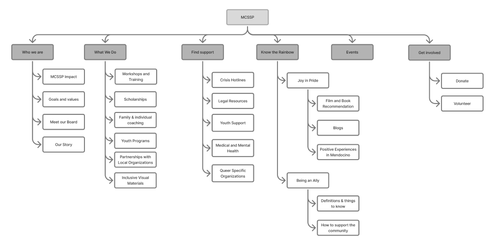
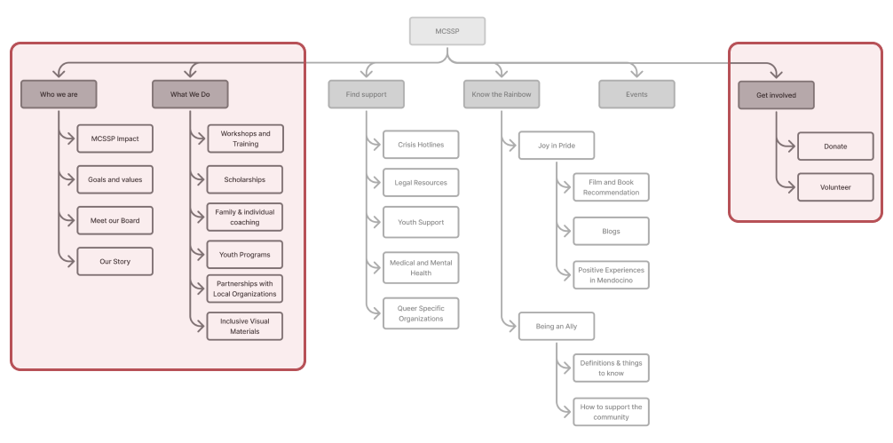
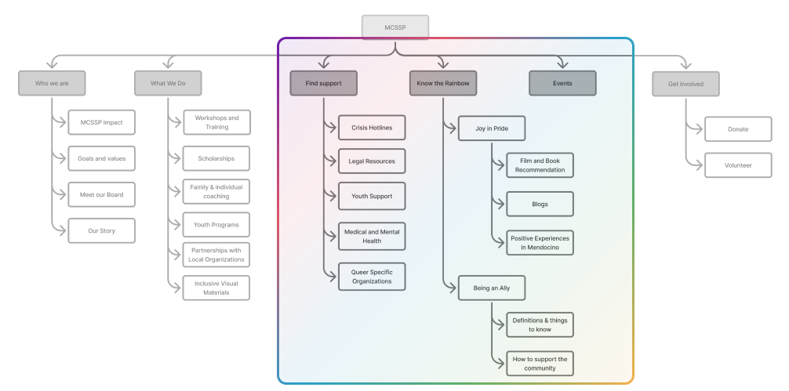
With the structure in place, we moved into wireframes to "make MCSSP's story public" and "give the community a resource hub" into actual pages. As we worked, two questions came up:
Interviews gave clear direction for pages like "Being Queer."
But no one knew how much MCSSP could even publish when it came to resources or programs.
Some sections ballooned to four pages. Others stayed a single, fun page.
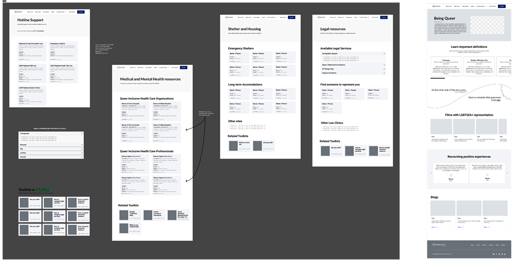
Without clear content expectations and scope, Resources expanded too much while Being Queer stayed minimal.
We realised our interviewees skewed younger. MCSSP's older community wasn't represented.
Since "queer" showed up across our wireframes, we worried it might not land the same way for them as it would for younger users.
We didn't know if the word “queer” was a slur, and we'd used it everywhere.
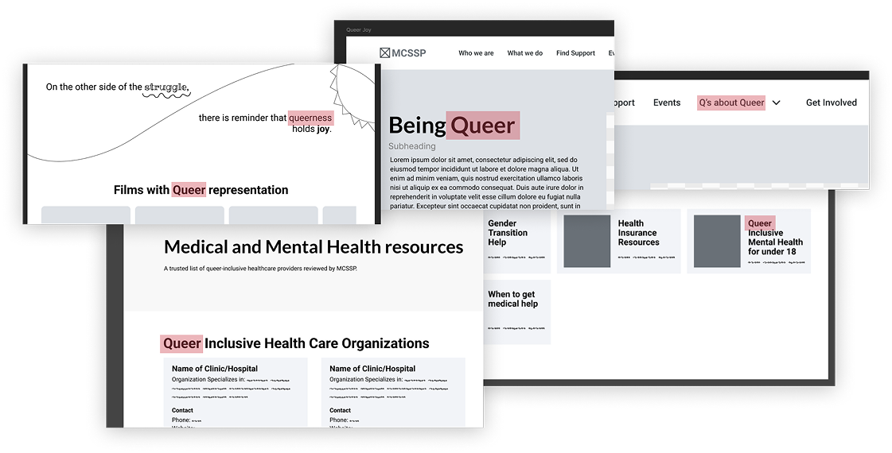
The word 'queer' showed up everywhere in our wireframes.
While Cynthia didn't have an exact number, on the call, they gave us an estimated number of resources and programs they'd verified.
We worked with this estimate as their team quickly pulled together an actual resource list of what MCSSP could realistically publish.
They sent a real list. No more guessing.
Cynthia wanted us to use "LGBTQIA2S+" in full, never shorthand. As a safe space, they had to make sure not to unintentionally alienate older community members.
But that care didn't mean holding back visually; they still wanted the site loud, colorful, and fun.
Careful with words, but still loud and colourful.
With the structure and tone aligned with Cynthia, we began designing the website that would bring MCSSP's work, resources, and community presence online.
Vibrant, bold colors reflect pride and community. Made sure to be accessible across light and dark backgrounds.
Headings originally used Lato in a heavier weight, but I swapped in Kumbh Sans because its rounded forms felt warmer and more approachable, while Lato stayed for body text where readability mattered most.
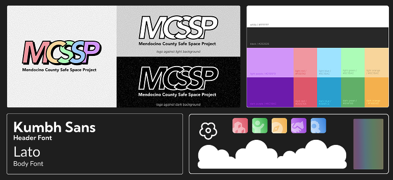
MCSSP's new brand identity with logo, colors, and typography."
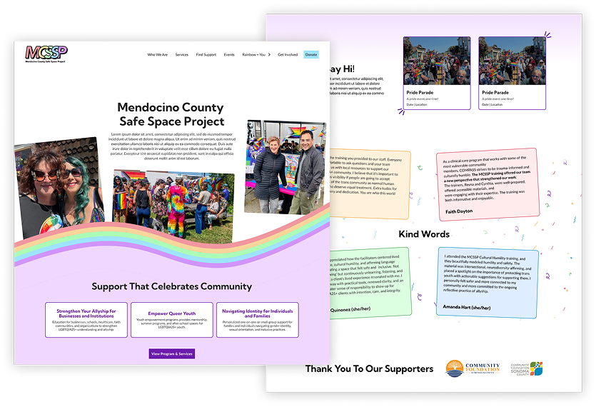
The final homepage with the perfect mix of welcoming, colorful, and community-first.
The homepage had one job: make people feel welcome the second they landed. That meant getting the visuals and pathways right, which the team couldn't agree on.
When the layout stalled between two directions, I suggested a quick mock-up to move the conversation forward. From there, we refined it into the version that shipped: vibrant colors, real photography from Mendocino County, and clear pathways straight to services and events.
I focused on making resource discovery clear and low-stress for people seeking support.
People searching for help are often stressed or in a hurry. So resources are grouped by what
someone needs, not by internal categories.
The categories use supportive, personal language,
and includes a dedicated space for queer youth.
Navigation stays visible throughout, so that someone arriving in a moment of urgency never loses track of where help is.
No single organization can keep up with every resource available. So the site lets users submit
resources to MCSSP
that's not been listed yet.
This will be reviewed by MCSSP before anything goes live, keeping the
list both wider and trustworthy.
Designed collaboratively across the team.
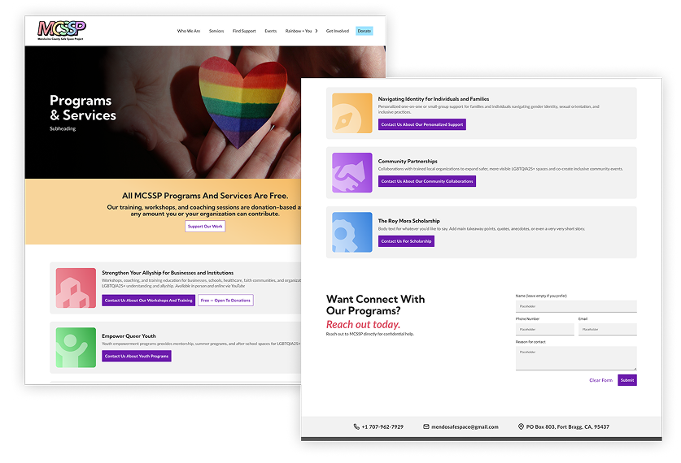
An overview of MCSSP's workshops, community programs, and support initiatives to make clear what MCSSP actually does.
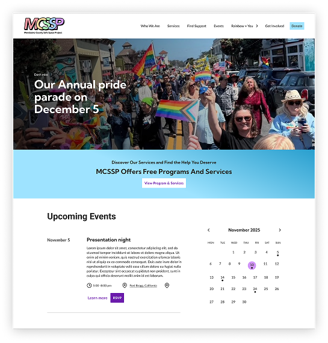
A shared calendar that surfaces events across Mendocino County so the community could see MCSSP in action, show up, and meet other queer folks and allies.
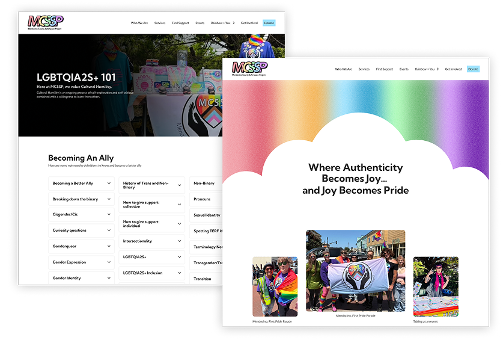
A storytelling space celebrating queer joy through blogs, watchlists, and community narratives, giving people a queer ABC guide, while celebrating representation in the community and in media.
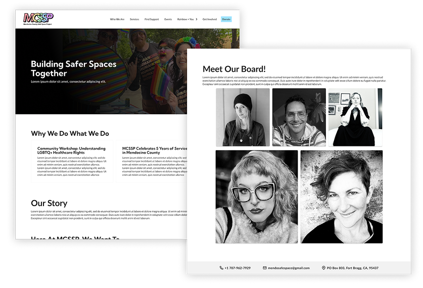
Explains MCSSP's mission, service areas, and board members, highlighting community impact and showing the faces behind the scene.
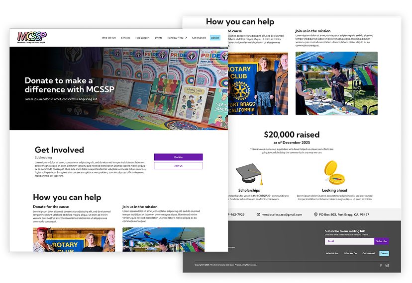
A page encouraging volunteering and donations for the users to offer help, in whatever way someone could.
Before shipping, we wanted to make sure people could actually find the highest-stakes content: crisis support, core offerings, youth resources, and new sections we'd added based on interviews and competitive research.
We really needed to know things worked before shipping, so we ran a tree test. It revealed all the problems we were dreading:
We soon found out the blind spots in our site:
These weren't just navigation issues, they were barriers to real support.
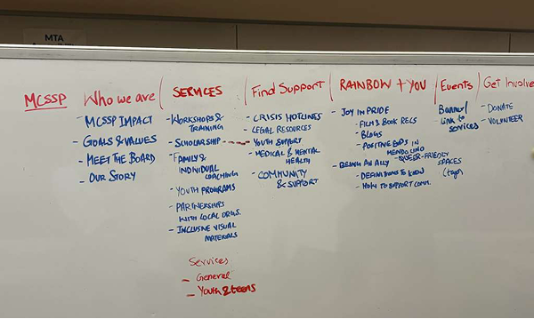
The site map we sketched while testing and iterating it.
Fixing all of this wasn't just about better labels. We had to rethink what we'd built without impacting our completed work. Not everything needed the same level of urgency, so we made three calls:
We saw that in most of the “wrong” results, people kept landing in the same unintended place.
So we cross-listed content in both locations instead of fighting the pattern.
Many testers failed on the tasks that involved finding something in one of our fun menus. One tester even told us they couldn't tell what a section was actually for because of the playful language.
So we dialled back the fun, since it was making information harder to parse.
Representation content had a 67% failure rate in testing, but we didn't feel it was important enough to need fixing.
Unlike scholarship or crisis support, it wasn't urgent enough to prioritize.
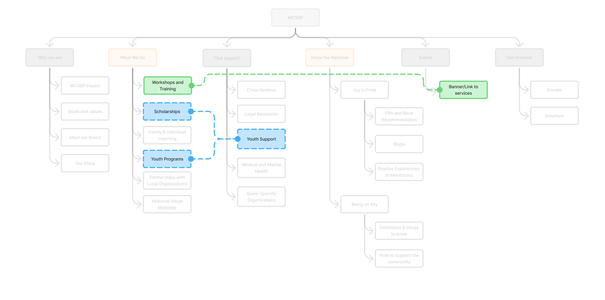
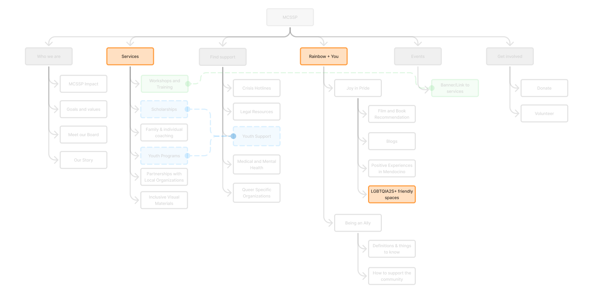
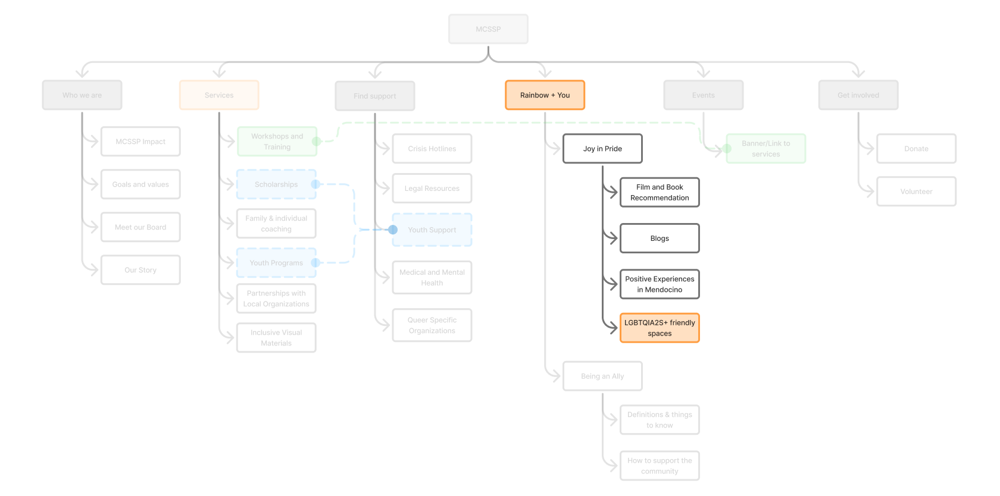
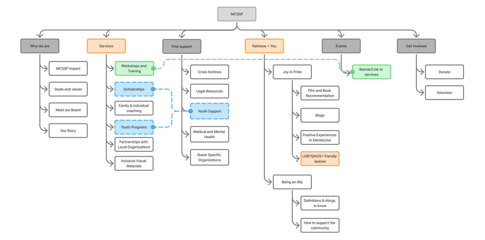
With the structure finalized, we moved into high-fidelity design. After refining interactions, hierarchy, and accessibility, and standardizing terminology across pages, we presented the final designs to the MCSSP board.
The response was overwhelmingly positive!
Cynthia and the board said they could finally see their mission clearly represented in a digital space. They were eager to begin building the site and asked for guidance on implementation.
With no dedicated developer and a small, mostly volunteer team, MCSSP needed a platform their own staff could update. We recommended platforms like Framer, WordPress, Webflow, and Lovable and weighing their flexibility, and ease of maintenance, for a with limited technical resources.
What began as a simple redesign quickly became something much bigger.
It became:
A visibility project.
A safety project.
A community project.
A storytelling project.
MCSSP was already doing meaningful work across Mendocino County, but much of it wasn't visible online. They inspired us to work hard to create a platform that could surface those resources and make them easier for people to find.
Seeing the board recognize their mission in the final designs was the most rewarding part of the project. And I hope our designs are able to make life easy for queer people in Mendocino and anyone else who may stumble upon this site.
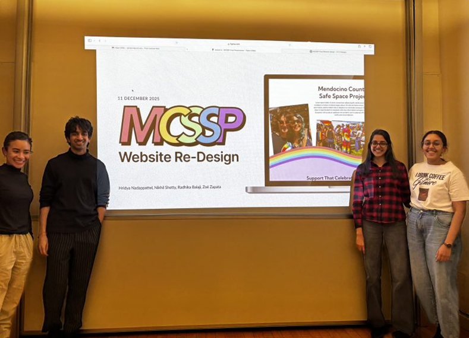